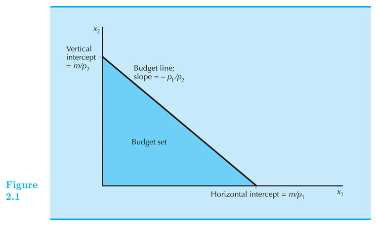

A consumption choice set is the collection of all consumption choices available to the consumer.
What constrains consumption choice?
A consumption bundle containing $ x_1 $ units of commodity 1, $ x_2 $ units of commodity 2 and so on up to $ x_n $ units of commodity n is denoted by the vector $ ( x_1, x_2, … , x_n ) $.
Prices or goods are denoted by: $ p_1, p_2, … , p_n $.
Suppose prices are $ p_1, p_2, … , p_n $ and a consumer has $ m $ as income.
Answer:
when $ p_1 x_1 + … + p_n x_n \leq m $
where $ m $ is the consumer’s (disposable) income.
That is, all the bundles that when purchased do not exhaust the consumer's income.
The bundles that are only just affordable form the consumer’s budget constraint or budget line.
This is the set:
$ \{ ( x_1 ,…, x_n ) :p_1 x_1 + … + p_n x_n = m \} $
$ B(p_1, … , p_n, m) = \{ (x_1, … , x_n) :p_1 x_1 + … + p_n x_n \leq m \} $

Budget line: $ p_1 x_1 + p_2 x_2 = m $
Solve for $ x_2 $ :
$ p_2 x_2 = m - p_1 x_1 $
$ x_2 = \frac{m}{p_2} - \frac{p_1}{p_2} x_1 $
Therefore the slope is: $ - \frac{p_1}{p_2} $
What is the interpretation: relative price.
Good one is beer (good 1) and orange juice (good 2).
Suppose $ p_1 = 3 $ and $ p_2 = 1 $.
Income = 100
slope = - 3: Consumer need to give up (buy less) 3 oz. of orange juice to afford (be able to buy) 1 additional oz of beer.
You can use the market to transform three units of OJ into one unit of beer, at the current prices. Therefore the term of relative price
The budget constraint and budget set depend upon prices and income. What happens as prices or income change?
Income change?
Prices change?
Board - Doc Camera
Makler's EconGraphs
Increases in income m shift the constraint outward in a parallel manner, thereby enlarging the budget set and improving choice.
Decreases in income m shift the constraint inward in a parallel manner, thereby shrinking the budget set and reducing choice.
Which one is "good" for consumer?
$ p_1 $ increases from $ p_1 $ to $ p_1' $
Budget constraint pivots: slope get steeper from $ -p_1 / p_2 $ to $ -p_1'/p_2 $
Increasing the price of one commodity pivots the constraint inward.
Some old choices are lost, so increasing one price could make the consumer worse off.
An ad valorem sales tax levied at a rate of 5% increases all prices by 5%, from $ p $ to $ 1.05 p $ .
An ad valorem sales tax levied at a rate of t increases all prices by tp from p to (1+t)p.
BC under a uniform sales tax: $ (1+t) p_1 x_1 + (1+t) p_2 x_2 = m $
Do the graph!
Consumer receives $ g_1 $ units of good one as a gift.
Draw the budget line.
Coupons that can be exchanged only for food.
How does a food stamp alter a family’s budget constraint?
Suppose $ m = {$}400 $ , $ p_F = {$}1 $ and the price of “other goods” is $ p_G = {$}1 $.
The budget constraint is then $ F + G = 400 $
Draw the budget line.
What if food stamps can be traded on a black market for $0.50 each?
Draw the budget line.
What if both, prices and income, double?
What if there are bulk discounts for units beyond a threshold?
What if there are quantity penalties for units beyond a threshold?